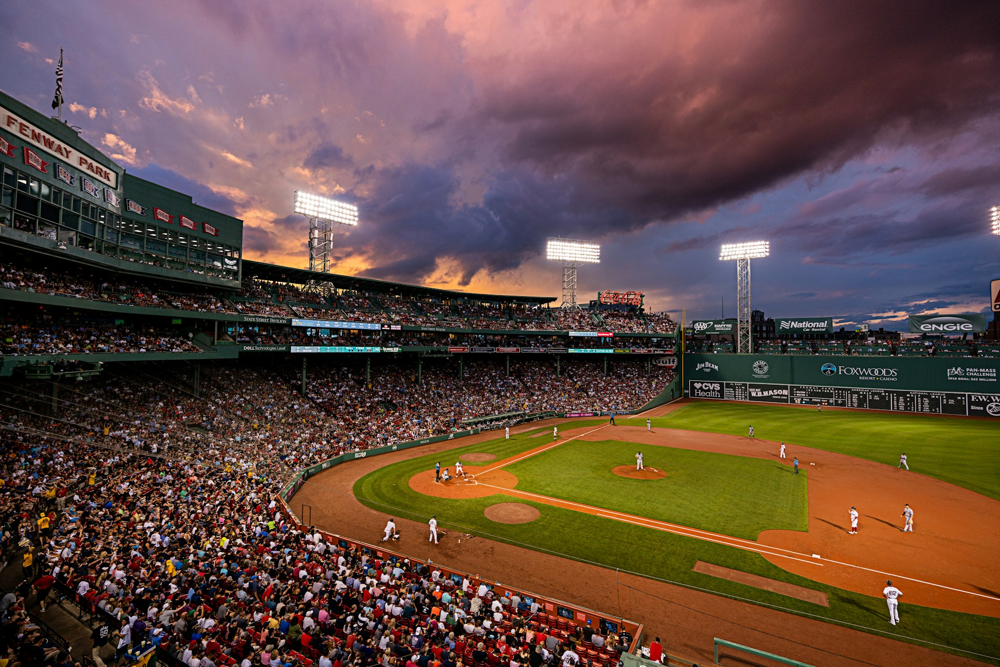
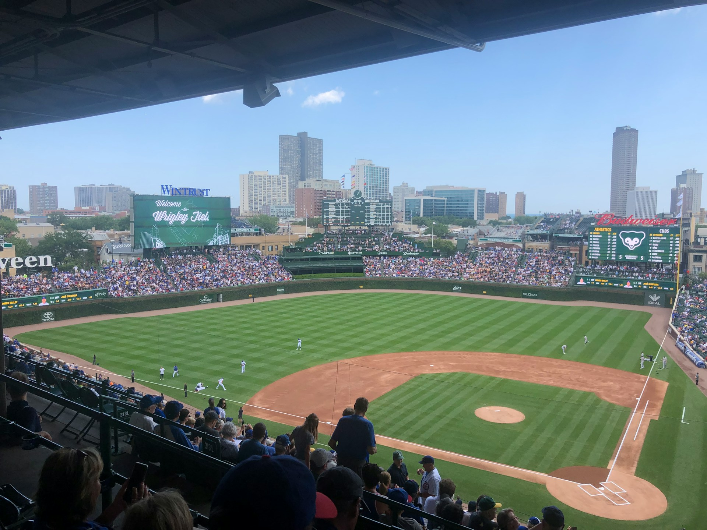

Why stadiums are important
Stadiums are a very important part of baseball. They are all different; some are better for pitchers, some for batters. Some stadiums are over 100 years old. For the fans and players alike, stadiums hold so many memories of wins, losses, and sweet moments between players and fans that will last a lifetime.
Unique Stadiums

Fenway Park is the oldest park in all of MLB. It was opened in 1912 and is known for the Green Monster, which is the 37-foot, 2-inch wall in the outfield. Anytime a new player on the Red Sox or the opposing team plays at Fenway Park, they sign the back of the Green Monster.

Wrigley Field is the second-oldest park in all of MLB. It was opened in 1914, and it is known for its nostalgia, with its ivy-covered walls and old-time hand-operated scoreboard. Wrigley Field was also the site of Babe Ruth's most famous home run.

Oracle Park is not one of the oldest stadiums, but it is one of the most interesting. It is right on San Francisco Bay. When I say right on, I mean it is so close that home run balls land in the bay. People will be waiting on the bay in their kayaks for a ball to drop into the water.